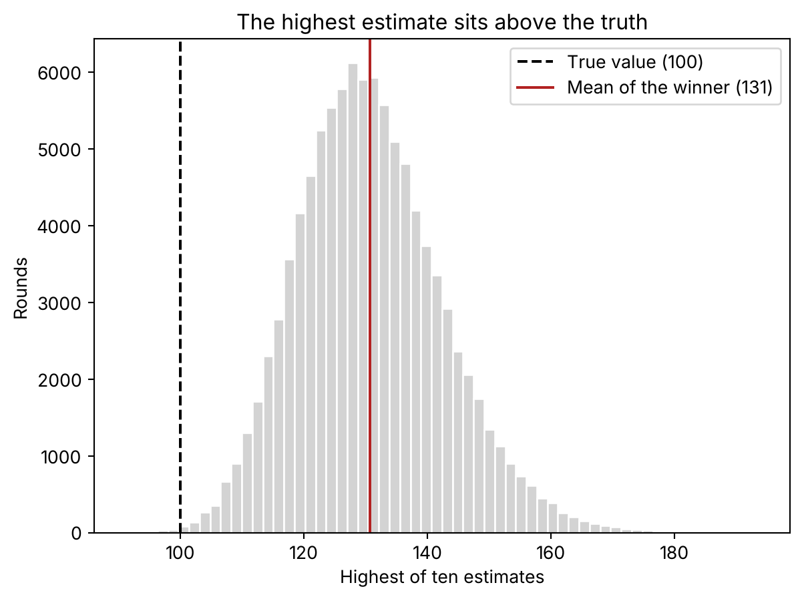
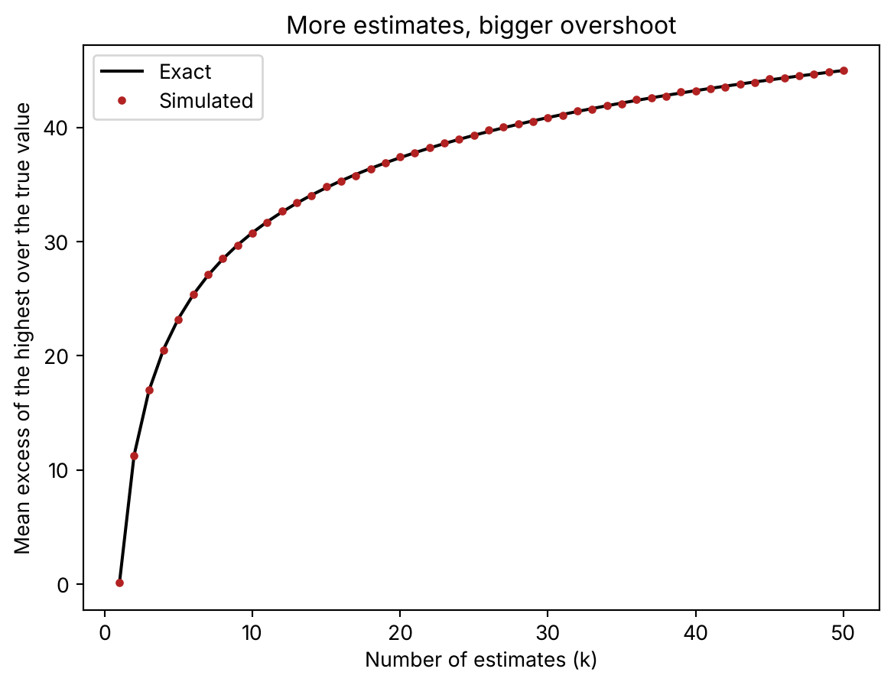

import numpy as np
import matplotlib.pyplot as plt
from math import erf, sqrt
TRUE_VALUE = 100
SD = 20The highest of ten honest estimates overshoots by one and a half standard deviations
probability
simulation
python
Take ten unbiased estimates of the same thing and keep the biggest. It comes out too high almost every time, and you can say by how much before you look.
Ten teams look at the same oil field and each one puts a value on it. None of them is biased: on average, they get it right. You take the highest number, and it’s about 30% too high.
Nobody made a mistake. Every team did honest work.
All of the overshoot comes from one decision: you kept the biggest.
In 1971, three petroleum engineers described this in auctions for oil leases. Companies kept winning and kept earning less than they expected. The winner was the company with the highest estimate. And the highest estimate is the one most likely to be too high. The idea became known as the winner’s curse.
It shows up any time you have several estimates and keep the best one. No auction required.
One round
The true value is 100. Each team’s estimate is that value plus some noise with a standard deviation of 20.
Here are ten estimates from one round.
# Ten unbiased estimates of the same true value
np.random.seed(1)
estimates = np.random.normal(TRUE_VALUE, SD, size=10)
print(np.round(estimates, 1))
print(f"mean of the ten: {estimates.mean():.1f}")
print(f"highest of the ten: {estimates.max():.1f}")[132.5 87.8 89.4 78.5 117.3 54. 134.9 84.8 106.4 95. ]
mean of the ten: 98.1
highest of the ten: 134.9The average of the ten is 98.1, close enough to 100. The highest is 134.9.
If you had only one team, its number would be as likely to land below 100 as above. Once you have ten and keep the top one, you’re looking at the luckiest draw of the ten.
A hundred thousand rounds
One round could be a fluke. So I repeat it 100,000 times and keep the winner of each.
# 100,000 rounds, ten estimates each; keep the highest of every round
np.random.seed(42)
n_rounds = 100_000
rounds = np.random.normal(TRUE_VALUE, SD, size=(n_rounds, 10))
winners = rounds.max(axis=1)
print(f"mean of all estimates: {rounds.mean():.2f}")
print(f"mean of the winner: {winners.mean():.2f}")
print(f"mean excess: {winners.mean() - TRUE_VALUE:.2f}")
print(f"share of rounds where winner > 100: {(winners > TRUE_VALUE).mean():.4f}")mean of all estimates: 99.97
mean of the winner: 130.74
mean excess: 30.74
share of rounds where winner > 100: 0.9990All the estimates together average 99.97. No bias there.
The winners average 130.74. And the winner is above the true value in 99.9% of rounds. For the highest of ten to come in under 100, all ten have to come in under 100, and that happens about once in a thousand rounds.
fig, ax = plt.subplots()
ax.hist(winners, bins=60, color="lightgray", edgecolor="white")
ax.axvline(TRUE_VALUE, color="black", linestyle="--", label="True value (100)")
ax.axvline(winners.mean(), color="firebrick", label=f"Mean of the winner ({winners.mean():.0f})")
ax.set_xlabel("Highest of ten estimates")
ax.set_ylabel("Rounds")
ax.set_title("The highest estimate sits above the truth")
ax.legend()
plt.show()
The dashed line at 100 sits on the left edge of the histogram. Almost the whole thing is to its right.
Each estimate is unbiased. The maximum of them is not. Taking the maximum is a procedure, and this procedure has a bias of its own.
How much, and what it depends on
The overshoot is predictable. If you draw \(k\) values from a normal distribution, the expected maximum sits a fixed number of standard deviations above the mean. That number depends only on \(k\).
For \(k = 10\) it is about 1.54. With a standard deviation of 20, that gives \(1.54 \times 20 \approx 31\) points. That’s the 131 from the simulation.
There’s no tidy formula for that number, but an integral gives it to you. The density of the maximum of \(k\) standard normals is \(k\,\phi(z)\,\Phi(z)^{k-1}\), where \(\phi\) is the normal density and \(\Phi\) its cumulative distribution. Multiply by \(z\), integrate, and you have its expected value. The code below does that numerically and compares it with a simulation for every \(k\) from 1 to 50.
def expected_max_std_normal(k):
# E[max of k standard normals] = integral of k * z * pdf(z) * cdf(z)^(k-1)
z = np.linspace(-8, 8, 20001)
pdf = np.exp(-z**2 / 2) / np.sqrt(2 * np.pi)
cdf = 0.5 * (1 + np.vectorize(erf)(z / sqrt(2)))
return np.trapz(k * z * pdf * cdf ** (k - 1), z)
np.random.seed(42)
ks = np.arange(1, 51)
sim_excess = np.array([
np.random.normal(TRUE_VALUE, SD, size=(20_000, k)).max(axis=1).mean() - TRUE_VALUE
for k in ks])
exact_excess = np.array([SD * expected_max_std_normal(k) for k in ks])
for k in (1, 5, 10, 20, 50):
print(f"k={k:2d} simulated {sim_excess[k-1]:6.2f} exact {exact_excess[k-1]:6.2f}")k= 1 simulated 0.11 exact 0.00
k= 5 simulated 23.20 exact 23.26
k=10 simulated 30.77 exact 30.78
k=20 simulated 37.43 exact 37.35
k=50 simulated 44.98 exact 44.98With five estimates the winner overshoots by 23 points. With ten, by 31. With twenty, by 37. With fifty, by 45.
fig, ax = plt.subplots()
ax.plot(ks, exact_excess, color="black", label="Exact")
ax.plot(ks, sim_excess, "o", color="firebrick", markersize=3, label="Simulated")
ax.set_xlabel("Number of estimates (k)")
ax.set_ylabel("Mean excess of the highest over the true value")
ax.set_title("More estimates, bigger overshoot")
ax.legend()
plt.show()
The curve climbs fast and then flattens. Going from one estimate to five costs you 23 points. Going from twenty to fifty costs you eight more. More options always make it worse, just more slowly each time.
The other ingredient is the noise. The overshoot is that fixed number times the standard deviation, so halve the noise and you halve the overshoot.
np.random.seed(42)
for sd in (10, 20):
w = np.random.normal(TRUE_VALUE, sd, size=(100_000, 10)).max(axis=1)
print(f"sd={sd}: mean winner {w.mean():.2f}, excess {w.mean() - TRUE_VALUE:.2f}")sd=10: mean winner 115.37, excess 15.37
sd=20: mean winner 130.81, excess 30.8115.37 with a standard deviation of 10, 30.81 with 20. Twice the noise, twice the overshoot.
So the 30% in the first paragraph belongs to this example, where the noise is a fifth of the value. The general statement is in standard deviations: with ten candidates, the winner overshoots by about one and a half.
When the options really differ
So far the ten teams were measuring the same thing. In practice you’re usually choosing between things that really are different, like ten ad campaigns. Some of them are better.
Then the winner is partly better and partly lucky, and you’d like to know how much of each.
I simulate ten options whose true values vary around 100 with a standard deviation of 10. Each is measured with noise of standard deviation 20. I pick the one that measures highest.
# Ten options with different true values (mean 100, sd 10), measured with noise sd 20
np.random.seed(42)
n = 100_000
true_vals = np.random.normal(100, 10, size=(n, 10))
measured = true_vals + np.random.normal(0, 20, size=(n, 10))
pick = measured.argmax(axis=1) # choose the option that measures highest
rows = np.arange(n)
measured_pick = measured[rows, pick]
true_pick = true_vals[rows, pick]
factor = 10**2 / (10**2 + 20**2) # = 0.2
shrunk = 100 + factor * (measured_pick - 100)
print(f"shrink factor: {factor}")
print(f"measured value of the chosen: {measured_pick.mean():.2f}")
print(f"true value of the chosen: {true_pick.mean():.2f}")
print(f"shrunk prediction: {shrunk.mean():.2f}")shrink factor: 0.2
measured value of the chosen: 134.42
true value of the chosen: 106.85
shrunk prediction: 106.88The chosen option measures 134 on average. Its true value is about 107. It’s a bit better than average. Most of what you measured above 100 was noise.
The fix is in the factor and shrunk lines, and it’s an old one. You pull the measurement back towards the overall average, by a factor that compares real variation with total variation:
\[\text{prediction} = 100 + \frac{\sigma^2_{\text{real}}}{\sigma^2_{\text{real}} + \sigma^2_{\text{noise}}}\,(\text{measured} - 100)\]
Here the real spread is 10 and the noise is 20, so you keep \(100 / 500 = 0.2\) of the distance to the average. The shrunk prediction averages 106.9, right on the true value of the chosen option.
As long as you know the two variances, the factor doesn’t care that you picked the maximum. That’s the nice part. Selection is what wrecks the raw number, and shrinkage already accounts for it. I went through the same idea with real data on the radon counties of Minnesota (in Spanish), where the hard part is estimating the two variances.
This is a cousin of the exaggerated A/B test in a small segment. There the filter was a p-value. Here it’s just “keep the biggest”, with no test anywhere.
What changes for you
Every time you rank things by a noisy measurement and report the top one, you’re bidding on that oil field.
The best campaign of the quarter. The model that won out of fifty configurations. Its number is the number of the luckiest draw. Expect less when you run it again.
How much less is not a mystery. It grows with the number of candidates and with the noise, and you can put a number on it before you see the results. If the noise is as large as the real differences between options, half of the winner’s lead vanishes. If it’s larger, most of it does.
So report the winner’s number shrunk towards the average, or measure the winner again on fresh data. The first number it gave you was the one that made you pick it.
Reference
Capen, E. C., Clapp, R. V. and Campbell, W. M. (1971). “Competitive bidding in high-risk situations”. Journal of Petroleum Technology 23(6), 641–653.